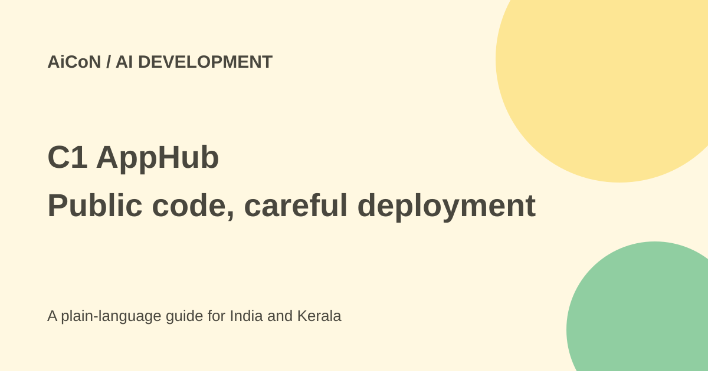

C1 AppHub: self-hosted AI apps, pricing and pre-alpha limits
C1 AppHub gives internal apps a shared path to sign-in, permissions and deployment. Its public repository is pre-alpha, and self-hosting does not remove cloud costs. C1 service needs depend on which integrations you choose.

What is C1 AppHub?
C1 announced AppHub on 28 September 2026 as a self-hosted platform for applications teams build with AI help. The official blog describes a deployment layer plus a pattern for linking apps to identity, permissions, credentials, network access and models.
An internal app might work for its creator but lack a clear owner, reliable login or reviewed access rules. AppHub aims to make those controls part of the same path used to build and publish the app, instead of adding them after people already use it.
The current repository is pre-alpha
The official C1 blog links the public ConductorOne/AppHub repository. Its current README labels the project pre-alpha. It describes an authenticated deployment control plane, worker and AWS deployment path, with local development support.
That status matters. The README explicitly says there is no release or supported upgrade path, and that local checks are not production validation. Real AWS, external identity and container-isolation acceptance must pass in an approved environment before production use.
The current toolkit is also more modular than the launch description: the README says ConductorOne is needed only if you choose its optional credential provider, and library packages do not depend on it. The C1-connected pattern described in the launch and the repository toolkit are therefore not identical promises.
What C1 supplies to an app
The blog says sign-in runs through C1.ai and sensitive actions ask C1.ai for permission decisions instead of relying on an app's local role list. Credential and model-access paths are also intended to use shared company controls.
This can reduce repeated app-specific security work. It does not prove the app's business logic is correct, stop every data leak or replace secure code review. A centrally permitted action can still be wrong if the app uses the permission badly.
Can a single prompt publish an app?
The launch announcement describes a skills file and MCP server that can let a coding agent build and publish a governed app from one prompt. That is a vendor description of a configured workflow, not evidence that an arbitrary prompt works without setup.
The repository still needs identities, deployment targets, source approvals and worker configuration. An agent should not receive broad cloud or credential access just to make a demo easier. Review the resulting code and the final deployment before exposing it.
Free code versus paid services
The repository lists Apache License 2.0. You can inspect its open-source code under that licence, but cloud infrastructure, databases, model calls and connected enterprise services can still cost money.
The current C1 pricing page offers Platform, a SKU-based model, and Flex, a consumption-based model. It says exact pricing is scoped with the customer and provides a tailored quote. It does not give a universal free AppHub production package or a public all-in monthly price.
How to evaluate it
- Read the official AppHub blog and follow its repository link.
- Check pre-alpha status, the licence and current supported deployment path.
- Use a test environment with approved, non-sensitive data.
- Assign an owner and define who may deploy, sign in and take sensitive actions.
- Set approved repositories and narrow cloud/credential access.
- Test denied as well as allowed actions.
- Review billing for infrastructure, models and C1 services.
- Check logs, rollback and deletion before moving toward production.
Do not mistake demo records for live apps
The README describes local demo records and an AWS stub that is not a real account and cannot deploy. It also provides demo-seeding commands for records that look deployed in screenshots. A populated demo screen is therefore not proof that real cloud deployment succeeded.
Confirm the actual environment and outcome. Test sign-in, permission checks and the running application's URL using the intended account. Keep a way to undo the deployment without losing important business data.
Security review still belongs in the workflow
Generated code may introduce unsafe dependencies, wrong queries or missing validation. Review source hosts, secrets, build permissions and public exposure separately. A successful build is not an approval to publish customer data.
The README says private repository access uses repository-scoped GitHub App configuration with read-only contents access. Follow the actual supported configuration rather than giving an agent a general personal token. Re-check requirements as the pre-alpha project changes.
India and Kerala context
This is developer and enterprise tooling, not a ready-made free consumer app. A local startup or college team should first ask whether it has the operations and identity setup to maintain it. A smaller tool may be easier when there is no team to own cloud permissions, logs and upgrades.
What changed since the original AiCoN post?
This guide adds the verified repository, Apache-2.0 licence, pre-alpha warning, demo-versus-deployment distinction and quote-based C1 pricing. It keeps self-hosting separate from a free fully governed production service.
Frequently asked questions
Is the repository production-ready by default?
No. Its README currently labels it pre-alpha.
Does self-hosted mean no costs?
No. Hosting and connected services can be paid.
Does a working demo prove cloud deployment?
No. Check the actual target and live app.
Sources: Official AppHub explanation · Current public repository · C1 pricing · Official launch release. Checked 7 October 2026.